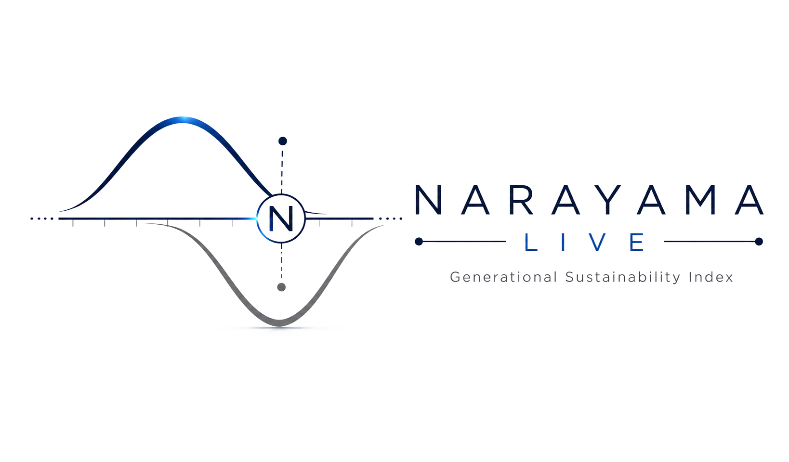

Termômetro do Índice de Narayama Sistêmico
O Índice N* mostra, de forma simples, a capacidade de 11 países de renovar suas gerações. Valores observados de fontes oficiais, com atualização trimestral.
Valores observados (N*_Obs), calculados das fontes oficiais sem ajustes. Zonas provisórias (teste F4).
O app roda em servidor gratuito: na primeira visita pode levar 30–60 s para acordar.
O N* compara a base e o topo da pirâmide etária, os nascimentos e as mortes, e a fecundidade de hoje com a da geração anterior.
Abaixo de 0,90 a renovação é insuficiente; de 0,90 a 1,40 há equilíbrio; acima de 1,40 há excesso.
Valores observados (UN WPP 2024), sem ajustes; as zonas ainda são provisórias.
PAPER 2
Why the Narayama Index? Life Extension and the Reduction of Generational Potential: Costs of Social Reproduction and the Need for a New Demographic Metric
As sociedades prolongam a vida das gerações existentes enquanto perdem capacidade de produzir a seguinte.
Introduz a Unidade de Reprodução Social Sustentável (URSS).
Propõe o N* como hipótese testável de mensuração, não como medida definitiva.
Itiberê L. G. C. Muarrek · Working Paper · 10/2026
Também disponível no Academia.edu: PT · EN
ResearchGate: PT · EN · DOI da versão original em português: 10.13140/RG.2.2.16911.55206
PAPER 1
Glocalization Collapse and Generational Reproduction Failure in Small and Medium Italian Cities: The Narayama Systemic and the Forest as Demographic Tombstone
Aplica o Índice de Narayama Sistêmico ao caso italiano: TFR 1,21, N* 0,61, zona PEC.
Propõe a expansão da floresta como marca territorial da perda de reprodução geracional.
Propõe IVAT e glocalização ativa como reversão.
O PDF está em revisão: a versão 2 trará os valores atuais do AINU.
Itiberê L. G. C. Muarrek · Working Paper · 09/2026
Também disponível no Academia.edu: PT · EN
DOI da versão original em português: 10.13140/RG.2.2.29067.25122